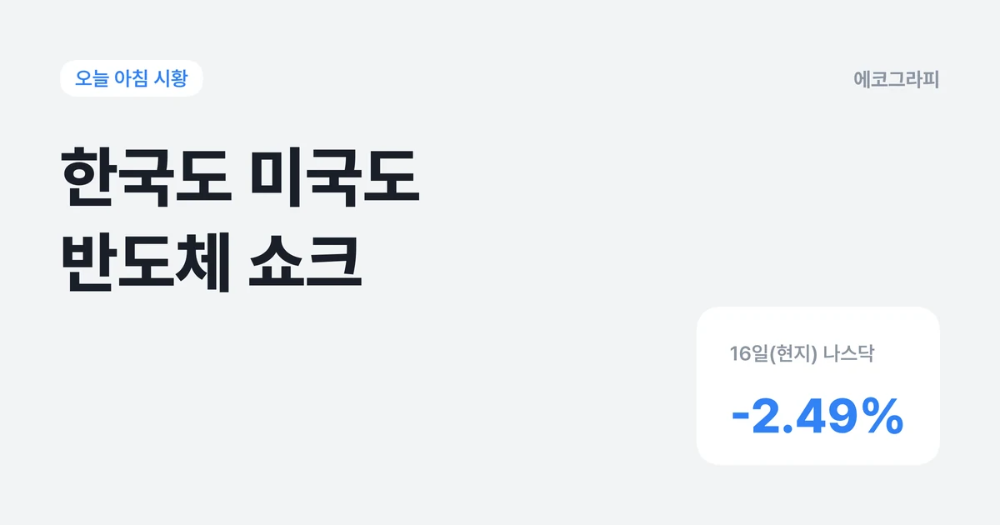
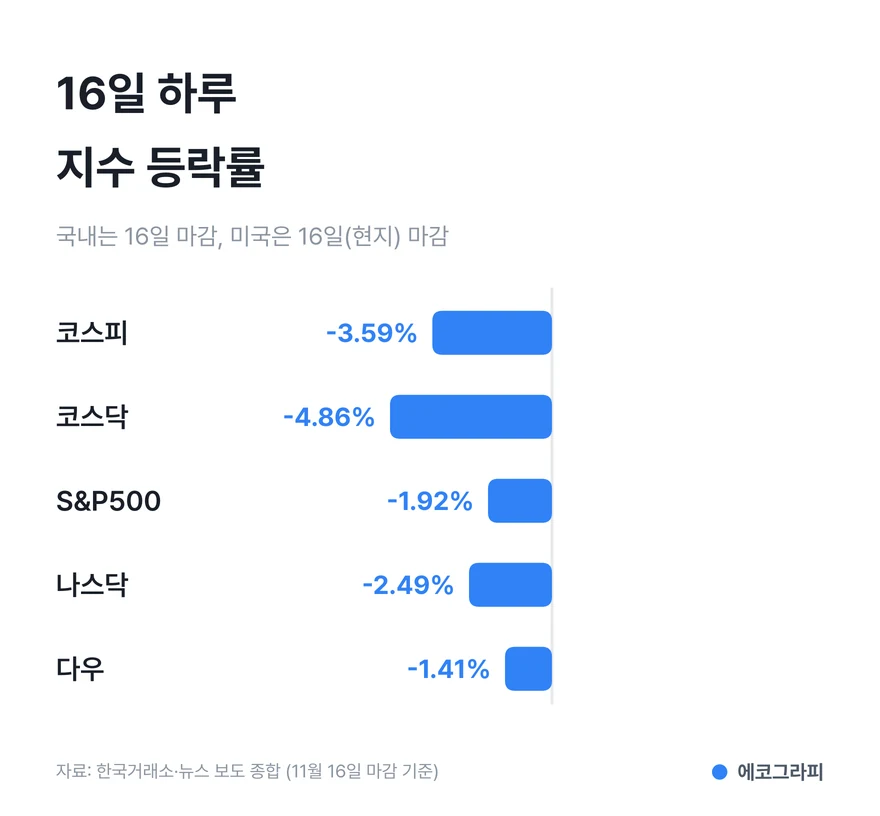
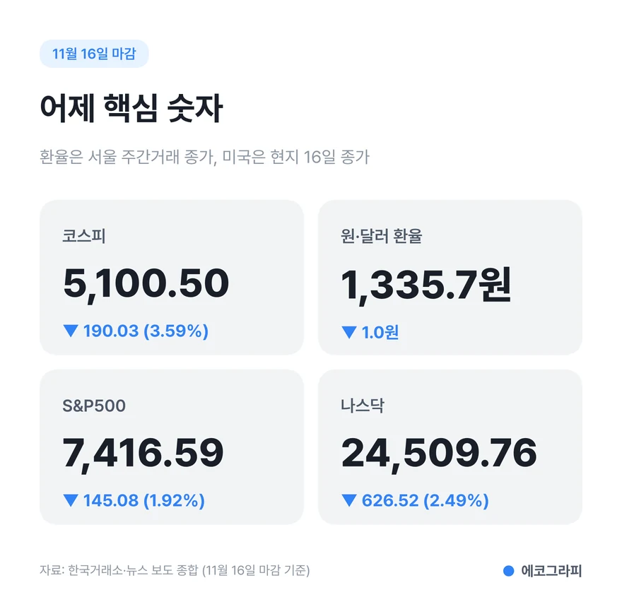
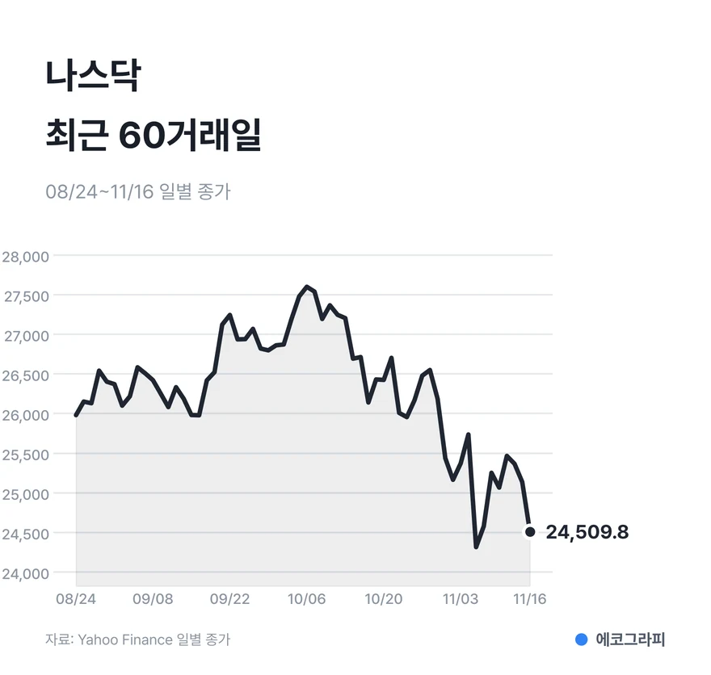
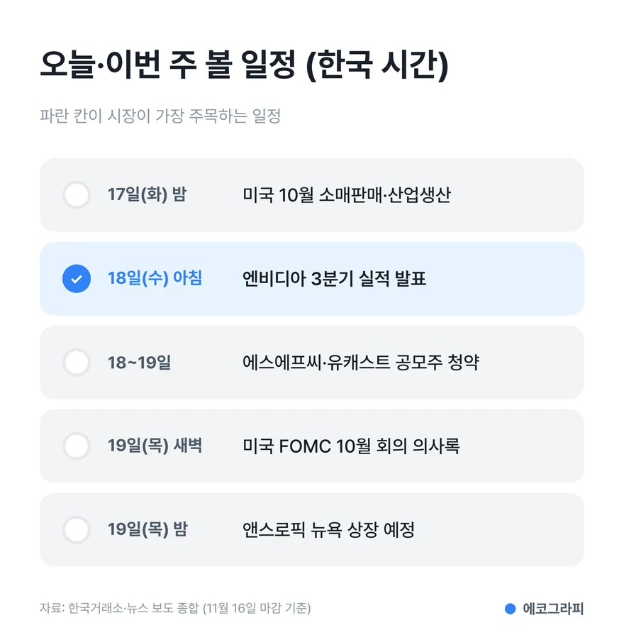

16일 코스피는 조금 오르며 출발했지만 오후로 갈수록 밀려 190.03포인트(3.59%) 내린 5,100.50에 마감했어요. 3거래일 연속 하락이에요. 코스닥은 665.65(-4.86%)로 더 크게 빠졌어요.
외국인이 코스피에서 약 1조 3,800억 원을 팔았고, 개인이 약 1조 3,500억 원을 사들이며 받아냈어요. 반도체 비중이 큰 지수라 SK하이닉스(-7.89%)·삼성전자(-4.47%) 하락이 그대로 지수에 반영됐어요. 원·달러 환율은 1,335.7원으로 1.0원 내려 거의 움직이지 않았어요.
어제 장 마감 직후 자세한 내용은 어제 저녁 속보: 코스피 3.59% 급락, 5,100선에 정리해 뒀어요.

미국도 반도체가 중심이었어요. 나스닥은 24,509.76(-2.49%), S&P500은 7,416.59(-1.92%), 다우는 51,608.17(-1.41%)로 마감했어요. S&P500 11개 업종 가운데 10개가 내렸어요.
엔비디아는 4.12% 떨어졌고, 마이크론·인텔·AMD 같은 다른 반도체주도 5~7%대 약세였어요. 하락은 반도체에서 은행 같은 금융주로까지 번졌어요. 시장의 불안을 보여 주는 VIX(변동성지수)는 하루 만에 약 19~20% 뛰어 23선까지 올랐어요.

한 줄 정리: 한국 하락도, 미국 하락도 뿌리는 같아요. "AI 반도체 투자가 계속 커질 수 있을까"라는 의심이에요.
코스피는 10월 초 7,000선 근처에서 크게 내려왔어요. 이달 9일 5,000선 가까이 밀렸다가 5,300선까지 반등했는데, 어제 하락으로 다시 5,100선이 됐어요.
나스닥도 최근 고점에서 꽤 내려왔어요. 미국 기술주 흐름이 다음 날 코스피 반도체주에 바로 이어지는 일이 많아서 같이 보면 좋아요.

가장 큰 일정은 한국 시간 18일(수) 아침 엔비디아 3분기 실적이에요. 젠슨 황 없이 처음 하는 실적 발표라, 매출 숫자보다 다음 분기 전망과 AI 투자 계획이 더 주목받고 있어요. 오늘 밤엔 미국 소매판매 지표가 나오고, 국내에선 18일부터 공모주 청약 2건이 시작돼요.

오늘 해볼 것: 큰 하락 뒤에는 하루 숫자보다 내 계좌의 반도체 비중을 먼저 적어 보세요. 실적 발표 뒤 흔들림이 커질 수 있어요.
둘 다 반도체 비중이 큰 시장이라, 엔비디아 관련 걱정이 양쪽에 동시에 영향을 줬어요. 한국은 낮에, 미국은 그날 밤에 같은 걱정이 반영된 거예요.
미국 17일 장 마감 뒤에 나와요. 한국 시간으로는 18일 수요일 아침이에요.
보통 20을 넘으면 불안이 커졌다고 봐요. 다만 30~40을 넘었던 큰 위기 때보다는 낮은 수준이에요.
외국인 매도로 달러 수요가 생겼지만, 수출 대금 같은 달러 공급도 있어서 서로 상쇄됐다는 분석이 나왔어요.
※ 2026년 11월 기준으로 정리한 글입니다. 세율·제도는 바뀔 수 있으니 거래 전 증권사·국세청 안내를 한 번 더 확인하세요. 특정 종목·상품의 매수·매도 권유가 아닙니다.